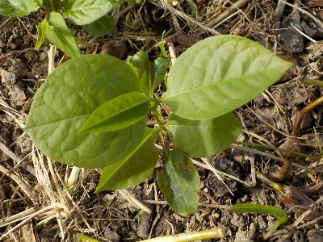
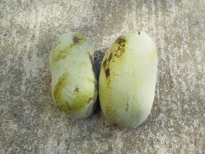
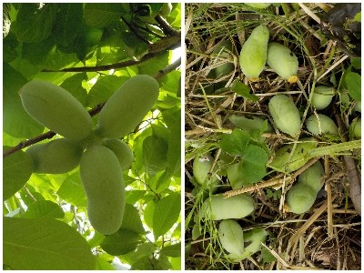

更新日 : 2025/07/19

ポポーの木のまわりに小さいポポーが誕生しています。
木の下で邪魔になるので抜き捨ててます。
近頃暑いので、去年収穫した冷凍保存のポポーを食べています。今年のポポー収穫までに食べきれるかな？
更新日 : 2025/08/31

今年は生で何個食べるかなー。
房が沢山付いてるところは間引いたので、そんなに大量には出来ない予定です。
更新日 : 2026/06/16

ポポーを育てる上で大切な摘果作業をしました。沢山出来ても食べれないし、熟して落ちたらタネが育って後で困りますからね。
私は1房には1個か2個実を付けるようにしています。
今年は摘果が遅かったみたいで実が少し大きくなっていました。大きいと実を見つけやすいので、これぐらいのタイミングでやると見逃しが少なくていいと思いました。
ポポー作りも食べ方もだいぶ慣れました。